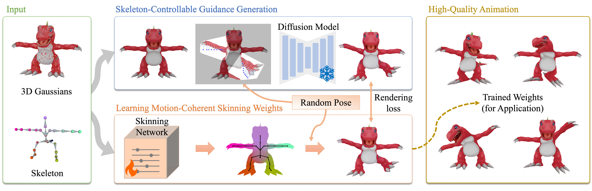

Skeleton-controllable image generation leveraging 2D vision foundation models to distill motion priors.
First framework to directly learn skinning weights on discrete 3D Gaussian primitives with arbitrary skeletons.
Local geometric constraints stabilize learning and ensure smooth, structurally coherent deformations.
Flexibly extends to augmented 3D Gaussian variants to mitigate animation-induced rendering artifacts.
3D Gaussian Splatting has achieved remarkable success in photorealistic and efficient rendering, leading to a rapid increase in 3D assets represented by 3D Gaussian primitives. Directly rigging these assets with arbitrary skeleton topologies is highly desirable. However, training a feed-forward skinning framework is infeasible due to the lack of high-quality 3D Gaussian rigging datasets. An alternative solution is to transfer mesh-based techniques to 3D Gaussian-based representation, but 3D Gaussian primitives are not restricted to the surface and lack explicit topological connectivity. Moreover, this kind of method suffers from poor generalization to unseen data due to its strong dependence on training data, while acquiring high-quality rigging data is prohibitively expensive. To address this challenging problem, we propose G-Skin, a novel generative skinning framework designed for expressive and high-fidelity animation with 3D Gaussian representation. To overcome this 3D data scarcity, we introduce a skeleton-controllable image generation model leveraging 2D vision foundation models to distill powerful motion priors into pseudo-guidance. Guided by these priors, we formulate an optimization pipeline incorporating geometry-aware regularizations, which stabilizes the learning process and ensures smooth, structurally coherent skinning weights. G-Skin also generalizes flexibly to the augmented variants of 3D Gaussian representation designed to mitigate animation-induced rendering artifacts. Extensive experiments validate the effectiveness of our approach, demonstrating clear advantages over state-of-the-art methods.

Overview of G-Skin. Given a 3D Gaussian representation and its corresponding skeleton, a skeleton-controllable guidance generation module is first introduced to leverage generative priors for producing guidance images. Subsequently, guided by these images, a robust learning framework incorporating two geometric regularization terms is designed to learn motion-coherent skinning weights.